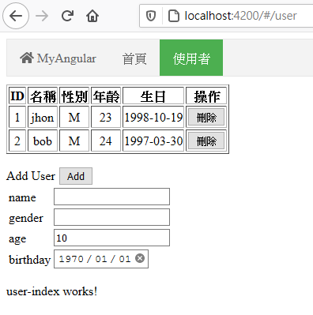
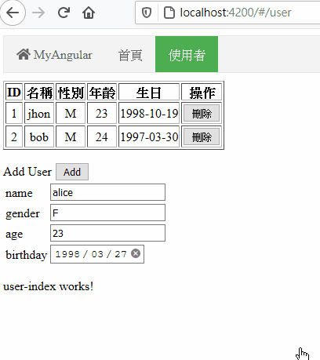

Angular學習筆記7 - Injectable、Service
本來是要在上次連假時發佈，但是後來接期中考，就被我放置到現在了
是時候要讓 angular 系列先告一個段落了
這將會是目前 angular 系列的最後一個主題
這篇主要會說明在 Angular 中蠻重要的部份，Injectable
最後會實做一個簡單的 Service 從後端取資料到前端
Injectable
Inject 一詞意思為注入
而 Injectable 則是可注入的
在講 Injectable 主體之前，要先講到所謂的依賴注入
依賴注入 (Dependency Injection)
先來看一下維基百科裡對 dependency injection 的定義
In software engineering, dependency injection is a technique in which an object receives other objects that it depends on. These other objects are called dependencies. In the typical “using” relationship the receiving object is called a client and the passed (that is, “injected”) object is called a service.
依賴注入，是將某個物件依賴的其他物件，傳遞 (注入) 進來的技術
被傳遞 (注入) 進來的物件稱為 service，而使用這些 service 本身的物件稱為 client
依賴注入可以降低物件之間的耦合
由於是建構時注入，而非直接依賴
因此程式本身容易修改，結構不容易被破壞
Injectable 結構
Angular 本身有自己的依賴注入方式
一個可注入的服務會經過裝飾器 Injectable 的修飾
({ |
-
provideIn: 被提供者，可選參數
有給種類型：root
應用程式級別的注入器，整個應用程式都可以注入platform
整個頁面的應用程式共享的注入器，注入的是相同實例 (Singleton)any
延遲載入的模組擁有獨立的實例，即時載入的則共享實例
通常由
ng generate建立的默認都是root
其他注入形式
可以只對 module 級別或是 component 級別的類別來進行注入
Module 級別的注入
在經過 NgModule 修飾的時候加入新的參數 providers 即可
({ |
module 與其底下的類別將可以注入 SomeService
Component 級別的注入
跟 NgModule 差不多，一樣在 Component 修飾時加入新的參數 providers
({ |
實例 - UserService
這邊將會透過產生一個 UserService 來展示 Injectable 的使用方法
事前準備
- 服務端 :
這邊我使用 flask + flask_CORS 來建立一個可以跨域存取的 WebAPI
建在 localhost:8888 - 資料庫 :
使用 sqlite 來讀取或新增使用者的資料
公開 API
- GET /user
取得所有用戶資訊 - POST /user
新增用戶 - DELETE /user/< id >
刪除用戶
建立 Service
使用下列指令建立 UserService
ng generate service user/user |
這邊採用
user/user的路徑是為了將它放到user資料夾底下
後面的user則是 service 的名稱
然後就會看到下列的程式
import { Injectable } from '@angular/core'; |
引用 HttpClient
為了使用這些 WebAPI 進行操作，須要發送 http request
可以使用 angular 內建的 HttpClient
引入 HttpClient 前，要先確認已經在要使用的模組內引入 HttpClientModule
由於一個應用程式可能會有多時候需要發送 http request
因此建議將它加到 AppModule 內
然後在程式上方引入 HttpClient
import { HttpClient } from '@angular/common/http' |
RXJS
RXJS 是一個響應式設計的函式庫
HttpClient 操作後會回傳一個 Observer
而 Observer 正是 RXJS 的類別之一
但是 RXJS 並非這次的主題，加上我在這方面也是新手而已，因此這邊將不會介紹 RXJS 的相關內容
有關 angular 的 RXJS，可以參照：Angular - The RxJS library
撰寫 Service
引入了 HttpClient 之後
接著就開始撰寫 Service 本身
首先根據前面的三個 API 撰寫對應的內容
({ |
裡面對 http 的任何操作，都會回傳一個 Observer 的實例
get、delete、post、put 等方法的泛型表示的是回傳資料型別
這邊稍微偷懶一下，都用 any 來跳過型別檢查
HttpClient 的 request 操作最後一個欄位可以設定一些額外參數
observe
Observable的類型，這邊使用response表示回傳的是一個HttpResponse的物件，資料為前面指定的anyresponseType
回應的資料類型，這邊使用json做為 http response 的資料型態
注意 HttpClient 的 post 跟 put
HttpClient 的 post 跟 put 傳送的資料並非欄位，而是 json 的形式
因此服務端接收時要注意一下，並妥善處理
http 函式的資料型態指定
由於最一開始使用建立 angular 時是使用嚴格模式
因此再生成網站時會進行型別檢查
要繞過的話必須要使用 any 來確定它可以接受任何型別
不加型態的相關方法沒辦法在嚴格模式下使用
使用 Service
這邊會透過之前已經建立好的 UserComponent 來引入 UserService
首先將 UserService import 進來
import { UserService } from './user.service' |
然後直接在建構式裡引入 UserService
export class UserComponent implements OnInit { |
接著為這個類別設計一個簡陋的畫面
<table border='1'> |
畫面結果如下圖所示：

上方的 table 會列出從伺服器掃到的所有用戶資訊，並提供刪除按鈕
刪除按鈕會呼叫 delUser 來刪除用戶
下方有一個簡陋的表單，可以新增使用者
每個 input 欄位都綁定一個變數，發生變化時也會即時修改變數內容
按下 Add 按鈕時，將表單的內容透過 addUser 發送 POST 到服務端來新增用戶資料
Component 最終的程式內容如下：
import { Component, OnInit } from '@angular/core'; |
其中的 updateUser 為更新列表的函式，會發送一個 request 到伺服器取回用戶列表
上面的程式碼中你可以注意到，當呼叫了 userApi 裡面的函式後，回傳時變立即使用了 subscribe 函式
前面說過 HttpClient 的結果是一個 Observable
Observable 物件透過 subscribe (訂閱) 來執行內容
裡面需要先丟一個回調函式 (callback) ，之後會把內容回傳回來
由於前面回傳的類型是 Response<any> ，因此這邊接收到的也會是 Response<any>
透過 http 的狀態碼來辨別操作使否成功 (http 狀態碼的輸出也是由服務端來定義)
成功會就進行相對應的操作
完成之後就可以進行簡單的新增與刪除了

後記
最初寒假學習 angular 時，其實都沒想到最後會跑來寫這一系列
老實說也因為寫得太早，還沒有時間好好消化內容，就出來誤人子弟
原本只打算在建置環境時才使用 win10 虛擬機
但後來想想，既然都架環境了，那就乾脆用下去吧，於是之後所有的內容都是在 win10 虛擬機上完成的
Injectable、Service 這篇因為拖太久才開始寫，寫了之後又被我放置至今
這篇的內容其實也沒什麼，比較重要的部份反而是在 HttpClient 上
為了能夠有一個比較 “完整” 的網頁，所以我選擇建立一個要從後端取資料的 Service 來介紹這個主題
裡面雖然有提及 RXJS，但是只是稍微敘述一下，我自己也沒辦法講太多，不然會離題
我在 RXJS 和 Angular 上是個初學者，沒辦法提供很深入的內容也是原因之一
不過這些文章本來也就只是作為自己筆記而已，在寫的過程中複習自己看過的、練習過的內容
發現不知道怎麼描述的地方，就去翻官方文件理解官方設計這個類別的涵義
Injectable、Service 本來就是作為整個 angular 系列一個段落的結束
其實到這邊我想也差不多了，應該可以用這些元素這個建置一個簡單的網站
也有了取得後端資料的途徑 (HttpClient)，所以沒打算繼續介紹下去
後面還有像是 Guard 之類的內容，目前就不會去介紹，那些其實我也只有看過，都還沒寫過
最後針對這篇最初引用的 IT邦鐵人賽文章：Angular 深入淺出三十天
我覺得這篇內容還不錯，還包含以 angular 建立一個網頁的內容，裡面講了許多 angular 的關鍵類別跟用法
自己看這篇其實算是看得蠻順的，最初也是照著這篇教學一步一步深入 angular
angular 筆記在此就先告一個段落
如果有寫得不好，或是有錯誤的地方，歡迎透過下方的 gitalk 提出